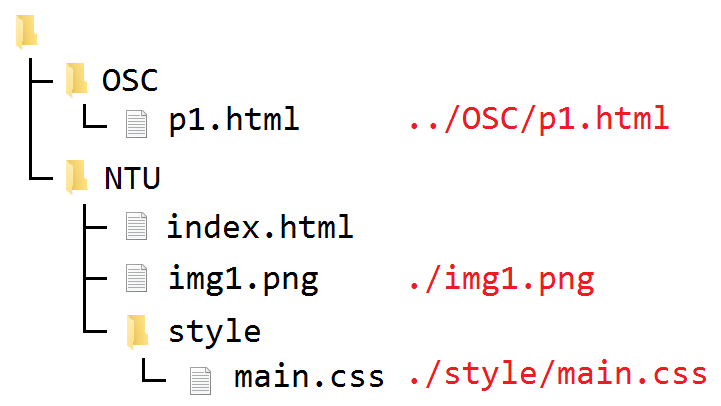
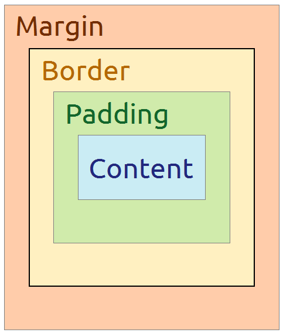

從 0 開始 HTML、CSS
講師
前端
人們可以接觸到的、看到的畫面
互動 － JavaScript
樣式 － CSS
結構 － HTML
文字編輯器
- Notepad（記事本）
- Notepad++
- Visual Studio Code
- Sublime Text
- VIM
- ...
「真男人都用 Notepad，沒有++」（子期，2015）
前端世界的遊樂場
HTML
HyperText Markup Language，超文本標籤語言
由 W3C 定義和維護
夏夜
轉化
來了！來了！從山坡上
(
輕輕地爬下來
)
了。
超連結
Google 首頁請點這裡 。
網址="https://www.google.com.tw/"
Google 首頁
(
請點這裡
)
。
Google 首頁 [超連結 網址="https://www.google.com.tw/"]( 請點這裡 ) 。
HTML:
Google 首頁<a href="https://www.google.com.tw/">請點這裡</a>。
HTML 基本結構
<元素的名稱 屬性="屬性的值"> 元素的內容 </元素的名稱>
< 起 始 標 籤 > < 終止 標籤 >
< H T M L 元 素 >
<a href="https://www.google.com.tw/">Google 首頁</a>
<h1>HTML 基本結構</h1>
<img src="./img/ConfusedNickYoung.jpg">

網頁的 HTML 基本架構
<!DOCTYPE html>
<html>
<head>
網頁的各種資訊
</head>
<body>
網頁的內容
</body>
</html>
head 元素
<head>
<!-- 網頁的各種資訊 -->
<title>NTUOSC | 從零開始 HTML、CSS</title>
<!-- title 元素：網頁的標題名稱 -->
<meta charset="utf-8">
<!-- meta 元素：一些網頁資訊
其中 charset 用來宣告網頁使用的編碼 -->
</head>
行內元素
<a href="URL"> 點這邊 </a>
<img src="URL">
<br>
<span> ㄎㄧㄤ </span>
補充：URL 的相對路徑
區塊元素
<h1> 中文圖書分類 </h1>
<h2> 000 總類 </h2>
<h3> 000 特藏 </h3>
<h2> 100 哲學類 </h2>
<h3> 100 哲學總論 </h3>
<p>
只有綠色的小河還醒著，<br> 低聲地歌唱著溜過彎彎的小橋。
</p>
<div> ㄎㄧㄤ </div>
通用屬性
<div> O </div>
<div class="a"> A </div>
<div class="b"> B </div>
<div class="a b"> AB </div>
<span id="ntuosc"> 臺灣大學開源社 </span>
CSS
Cascading Style Sheets，層疊樣式表
為 HTML 文件添加樣式的電腦語言
由 W3C 定義和維護
在 HTML 引入 CSS
在 <head> 中加入：
<link href="URL" rel="stylesheet">
<link>：用來連接外部的網頁資源- href 屬性：外部資源的 URL 位址
- rel 屬性：relationship，資源與目前網頁的關係
瀏覽器加的預設樣式我們不要
那就利用 CSS 修改樣式！
去除超連結元素 <a> 的底線
a {
text-decoretion: none;
}
基本結構
選擇器 {
屬性: 屬性值;
}
瀏覽器由選擇器得知要修改的元素
大括號內設定各種樣式
屬性代表要修改的樣式，以分號結束
屬性與其值之間以冒號隔開
CSS 選擇器
所有符合選擇器描述的元素都會被選擇到
基本選擇器
| 名稱 | 格式 |
|---|---|
| 元素類型選擇器 | 元素的名稱 |
| 類別選擇器 | . + class 屬性值 |
| ID選擇器 | # + id 屬性值 |
| 萬用選擇器 | * |
body { ... }
.my-class { ... }
#ntuosc { ... }
* { ... }
基本選擇器的組合
基本選擇器 A、B
| 功效 | 格式 | 說明 |
|---|---|---|
| 一起選 | A, B |
A、B都會選到 |
| 加強選 | AB（相連） |
同時符合A、B |
| 選子孫 | A B（空格） |
A 的所有 B 後代 |
| 選兒女 | A > B |
僅限 A 的 B 子代 |
#ntu, #osc { ... }
img.cat { ... }
#ntuosc .person { ... }
body > div { ... }
偽類別（pseudo class）
設定元素在特殊狀態下的樣式 都以冒號開頭
| 偽類別 | 狀態 |
|---|---|
:link |
超連接（沒點過） |
:visited |
超連結（點過了） |
:hover |
游標覆蓋 |
:active |
點擊中 |
a:link { ... }
p a:visited { ... }
div:hover { ... }
#ntuosc:active { ... }
CSS 單位
長度單位
| 分類 | 單位 | 說明 |
|---|---|---|
| 絕對 | px |
= 1/96 in。CSS 像素 ≠ 螢幕像素 |
pt |
= 1/72 in。點，文書軟體中常見 | |
in／cm |
英吋／公分 | |
| 相對 | em／rem |
目前元素／<html> 的字體大小 |
vh／vw |
= 1/100 的視窗高／寬 | |
% |
百分比，依屬性有不同定義 |
常見 CSS 屬性
CSS 的樣式屬性百百種
不同的屬性專門處理不同的部分
文字設定
字型
| 屬性 | 描述 | 屬性值 | 描述 |
|---|---|---|---|
font-family |
字體 | 字體名稱 | 以逗號隔開多個 會一個個嘗試 |
serif |
襯線體、明體 | ||
sans-serif |
無襯線體、黑體 | ||
font-size |
大小 | 各種長度值 | |
font-weight |
字重 | 100 ~ 900 |
|
其他文字樣式
| 屬性 | 描述 | 屬性值 | 描述 |
|---|---|---|---|
text-decoration |
裝飾線 | none |
無樣式 |
underline |
底線 | ||
line-through |
刪除線 | ||
text-align |
對齊 | center |
置中 |
left |
置左 | ||
right |
置右 |
範例
body {
text-align: center;
font-family: "Noto Sans CJK TC", "微軟正黑體", sans-serif;
}
a {
text-decoration: none;
}
.strong {
font-weight: 700;
}
顏色
顏色
| 屬性 | 描述 | 屬性值 |
|---|---|---|
color |
主要色（文字） | 各種顏色值 |
background-color |
背景色 |
顏色值
一般使用 RGB （三原色光模型）
| 分類 | 寫法 | 舉例 | |
|---|---|---|---|
| 關鍵字 | 各種關鍵字 | gold | |
| RGB | #rrggbb |
#ffd700 |
|
rgb(R, G, B) |
rgb(255, 215, 0) |
||
| HSL | hsl(H, S, L) |
hsl(51, 100%, 50%) |
|
| 透明 | transparent | ||
| 除了透明，其他四項的舉例都是同一個顏色。 | |||
補充：16 進位
| 10 進位 | 0 | 1 | 2 | 3 | 4 | 5 | 6 | 7 | 8 | 9 |
|---|---|---|---|---|---|---|---|---|---|---|
| 16 進位 | 0 | 1 | 2 | 3 | 4 | 5 | 6 | 7 | 8 | 9 |
| 10 進位 | 10 | 11 | 12 | 13 | 14 | 15 | 16 |
|---|---|---|---|---|---|---|---|
| 16 進位 | a | b | c | d | e | f | 10 |
| 10 進位 | 16 | 32 | 80 | 153 | 154 | 255 | 256 |
|---|---|---|---|---|---|---|---|
| 16 進位 | 10 | 20 | 50 | 99 | 9a | ff | 100 |
範例
.magic-text {
background-color: #0285f4;
color: black;
}
.magic-text:hover {
background-color: #673a87;
color: white;
}
尺寸
尺寸
| 屬性 | 描述 | 屬性值 |
|---|---|---|
height |
高度 | 各種長度值 |
width |
寬度 | |
max-height |
最大高度 | |
max-width |
最大寬度 | |
min-height |
最小高度 | |
min-width |
最小寬度 |
範例
.size-1 {
background-color: #0285f4;
width: 50px;
height: 50px;
}
.size-2 {
background-color: #34a853;
width: 100px;
height: 100px;
}
CSS 盒子模型（Box model）
上下左右的寫法
把四個邊的設定值寫在一起用空白分隔
順序是「上右下左」，可以簡化
| 寫法 | 上 | 右 | 下 | 左 | 描述 |
|---|---|---|---|---|---|
a |
a | a | a | a | 全部相同 |
a b |
a | b | a | b | 上下一組，左右一組 |
a b c |
a | b | c | b | 左右一組，上下分別設定 |
a b c d |
a | b | c | d | 全部分別設定 |
邊框（Border）
邊框（Border）
| 屬性 | 描述 | 屬性值 | 描述 |
|---|---|---|---|
border-width |
邊框寬度 | 各種長度值 | |
border-style |
邊框樣式 | solid |
實線 |
dashed |
虛線 | ||
none |
無邊框 | ||
border-color |
邊框顏色 | 各種顏色值 | |
範例
.border-1 {
border-style: solid;
border-color: #0285f4;
border-width: 10px;
}
.border-2 {
border-style: dashed solid;
border-color: #ea4335 #34a853 #34a853;
border-width: 10px 15px;
}
留白（Padding）
與
邊界（Margin）
留白與邊界
留白在內、邊界在外
| 屬性 | 描述 | 屬性值 |
|---|---|---|
padding |
內部的留白 | 各種長度值 |
margin |
外部的邊界 | 各種長度值（可負數） |
範例
.padding-1 {
padding: 1em;
}
.padding-2 {
padding: 0 3em;
}
再談盒子模型
Box Sizing
box-sizing 屬性改變尺寸套用的位置
| 屬性值 | 描述 |
|---|---|
content-box |
預設，套用在內容 |
border-box |
套用在邊框 |
範例
.box {
width: 100px;
height: 100px;
padding: 10px;
border: 10px solid #34a853;
}
.content-box { box-sizing: content-box; }
.border-box { box-sizing: border-box; }
Position 屬性
版面配置中威力強大的屬性
決定元素擺放的定位方式，影響網頁排版
Position 屬性
| 屬性值 | 描述 | 如何看待上下左右屬性 |
|---|---|---|
static |
預設 | 無視 |
relative |
相對定位 | 以自己的原位為基準移動的距離 |
absolute |
絕對定位 | 和父元素邊界的距離 |
fixed |
固定 | 和視窗邊界的距離 |
sticky |
黏上去 | 和父元素邊界的距離 |
上下左右屬性：top, bottom, right, left |
||
Display 屬性
版面配置中威力強大的屬性
每一個元素都有預設的 Display
決定顯示模式，影響網頁排版
Display 屬性
| 屬性值 | 描述 |
|---|---|
block |
區塊，就像平常的 <div> |
inline |
行內，就像平常的 <span> |
inline-block |
行內區塊 |
flex |
彈性盒子布局（一維） |
grid |
格線佈局（二維） |
none |
無，不會被顯示出來 |
行內元素被限制在行裡面，
上下的留白、邊界將會無效（行高不會改變）。
行內區塊元素整塊會像行內元素一樣跟著內文排列，
但又可以像區塊元素一樣用盒子模型的形式設定各種尺寸。
附錄：推薦網站
炫炫的陰影（Shadow）
文字陰影（Text shadow）
text-shadow: off-x off-y blur color;
| 個別屬性 | 個別屬性值 | 描述 |
|---|---|---|
| off-x | 各種長度值 | X 軸偏移量，正數往右 |
| off-y | Y 軸偏移量，正數往下 | |
| blur | 可不填。表示陰影模糊半徑 | |
| color | 各種顏色值 | 可不填。表示陰影的顏色 |
盒子陰影（Box shadow）
box-shadow: inset off-x off-y blur spread color;
| 個別屬性 | 個別屬性值 | 描述 |
|---|---|---|
| inset | inset |
選填，表示陰影在盒子裡面 |
| off-x | 各種長度值 | X 軸偏移量，正數往右 |
| off-y | Y 軸偏移量，正數往下 | |
| blur | 可不填。表示陰影模糊半徑 | |
| spread | 可不填。表示陰影擴張半徑 | |
| color | 各種顏色值 | 可不填。表示陰影的顏色 |